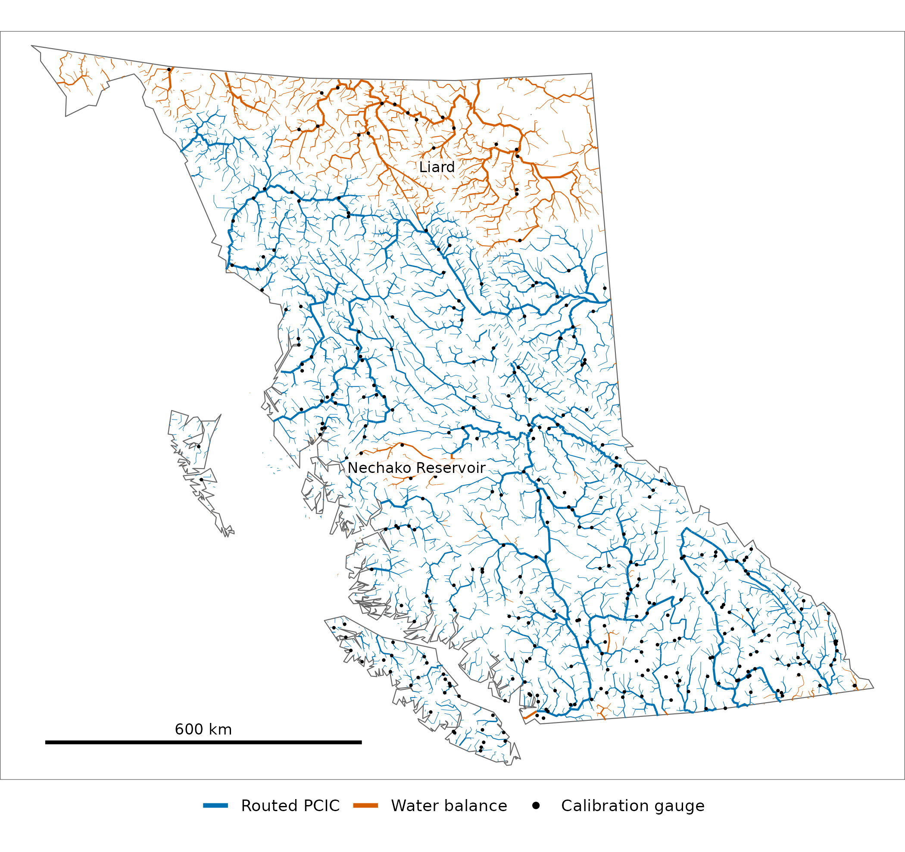

What it is
wet publishes the mean flow of British Columbia’s Freshwater Atlas
stream segments, in cubic metres per second, for each calendar month and
for the year. It is public at
s3://fresh-bc/discharge/fwa/v1/. The bucket allows no
listing, so a reader starts from the manifest, https://fresh-bc.s3.us-west-2.amazonaws.com/discharge/fwa/v1/manifest.json,
which lists every part with its rows, size and md5. The current build
has 67 parquet parts, 1.84 GB, built on 15 October 2026 at wet commit
acb820f.
-
segment_monthly: one row per segment, month and source with a value, 102,790,688 rows. Month 0 is the annual mean and months 1–12 the calendar months. -
watershed_monthly: the same per fundamental watershed, the small polygon each segment drains, from the water balance only.
Each row comes from one of two sources:
Routed PCIC (pcic_routed, 1951–2012).
The Pacific Climate Impacts Consortium runs the VIC-GL hydrologic model
on a 0.0625° grid, driven by observed climate, and routes its runoff
with the Raven model (hydromosaic). New
Graph’s fork of
fwapg places PCIC’s outlets on Freshwater Atlas segments and spreads
flow between them by drainage area. The annual value is the mean of the
twelve months.
Open water balance (wet_balance,
1981–2010). wet’s own estimate, after Chapman
et al. (2018): precipitation less actual evapotranspiration from
climate normals, averaged over each watershed’s upstream area and
adjusted per hydrologic
zone against the Water Survey of Canada’s HYDAT
gauges. It covers almost all of BC, and its code and inputs are
open.
Which value to use
3,374,133 segments have a value from both sources, and the two
differ, so one row per segment is marked as the default with
pick. It is chosen once per segment, on annual flow, and
the same source is picked for every month:
- routed PCIC, where it has a value;
- the balance where routed PCIC’s annual flow is under a fifth of the balance’s on a segment that lies on its own watershed’s line. Off that line (side channels, and connectors and waterbody connections the lookup gives another line’s watershed), routed PCIC is kept however low it is;
- whichever has a value, where only one does.
Of the 4,907,441 segments in the Freshwater Atlas, pick
takes routed PCIC on 3,152,838 (64%), the balance on 1,380,005 (28%;
224,199 of them because routed flow is far low), and 374,598 have
neither, almost all of them connection lines and secondary channels with
no watershed polygon of their own. The balance takes every segment with
a value in the Liard, where routed PCIC has none, and 98% of those in
the four Nechako Reservoir groups, where routed flow is far below the
balance’s (fwapg#24).

The source pick takes on main-flow rivers of stream order 5
and up (wider for higher orders), 6% of BC’s segments, and the 315
calibration gauges. Smaller streams are not drawn, nor the 1,557
segments of that order with neither.
How to read it
Read the parts from the bucket with duckdb. scenario,
forcing and source are in each part’s path,
not the file, so read with hive_partitioning. Parts are
sorted by watershed_group_code, so a read for one group
opens a few row groups:
library(wet)
cat <- wet_catalog() # the manifest: one row per part, with its href
segs <- cat$href[cat$dataset == "discharge/fwa/v1/segment_monthly"]
duck <- DBI::dbConnect(duckdb::duckdb())
DBI::dbExecute(duck, "LOAD httpfs")
# the default annual flow on the Bulkley's segments
DBI::dbGetQuery(duck, sprintf("
SELECT linear_feature_id, source, q_m3s
FROM read_parquet([%s], hive_partitioning = true)
WHERE scenario = 'historical' AND watershed_group_code = 'BULK' AND month = 0 AND pick",
paste0("'", segs, "'", collapse = ", ")))Or load it into Postgres beside the Freshwater Atlas:
conn <- DBI::dbConnect(RPostgres::Postgres(), dbname = "fwapg")
wet_db_load(conn, cat) # discharge.fwa_v1_segment_monthlyBesides flow (q_m3s) a row carries
runoff_mm, the same water as a depth over the area upstream
(NA for a routed row off its watershed’s own line),
coverage, the share of that area the balance’s inputs
cover, and period.
How good it is
Both sources are scored against mean annual runoff over 1981–2010 at the 315 HYDAT gauges the balance is calibrated on. Error is modelled minus observed, as a percentage of observed. The balance is scored held out: each Water Survey sub-sub-drainage (such as 08EE) is left out of the fit in turn and predicted from the rest, so a gauge’s neighbours on the same river cannot vouch for it.
| Routed PCIC, 290 gauges | Open water balance (held out), 290 gauges | Open water balance (held out), all 315 gauges | |
|---|---|---|---|
| Mean absolute error | 24.1% | 27.6% | 27.5% |
| Bias (mean error) | +0.2% | +9.0% | +8.5% |
| Middle half of errors | −14% to +10% | −15% to +24% | −16% to +24% |
| Within ±20% | 62% | 54% | 53% |
Routed PCIC is closer than the held-out balance at 170 of the 290 gauges both cover. Where each is weak:
- Headwaters. The balance averages 31% error at headwater gauges, whose basin holds no other gauge, against 18% at nested ones.
- Small basins. It averages 40% on basins under 100 km² against 20% on those over 1,000 km².
- The dry interior. In zone 24, the Southern Thompson Plateau, its 9 gauges average 93%: runoff there is a small remainder of precipitation, so a small error in evapotranspiration is a large one in runoff.
- The Liard. Routed PCIC has no value at 25 gauges, most of them in the Liard, where the balance is the only estimate.
Limits
- Coverage. Besides the Liard, routed PCIC has no value in a few northern and border basins, and only some on the outer coast’s islands.
- The zone adjustment is a close call on headwater basins. There it does not beat raw precipitation less evapotranspiration; it is kept for what it does on larger rivers. Zones with too few gauges for their own adjustment get none.
- Segments without a value. Of the 374,598, 369,217 have no watershed in the lookup through which the balance reaches a segment.
How the balance is built, and how each of its choices was tested: research/water_balance_method.md.
Validation
Every published value is checked against what it was built from when the product is built; the counts compared and differing are in the build report, discharge_publish_20260717.txt. This article’s routed values at the gauges and the picks on its map are read from that build’s published parts, and its data are not written unless the gauge values equal fwapg’s.